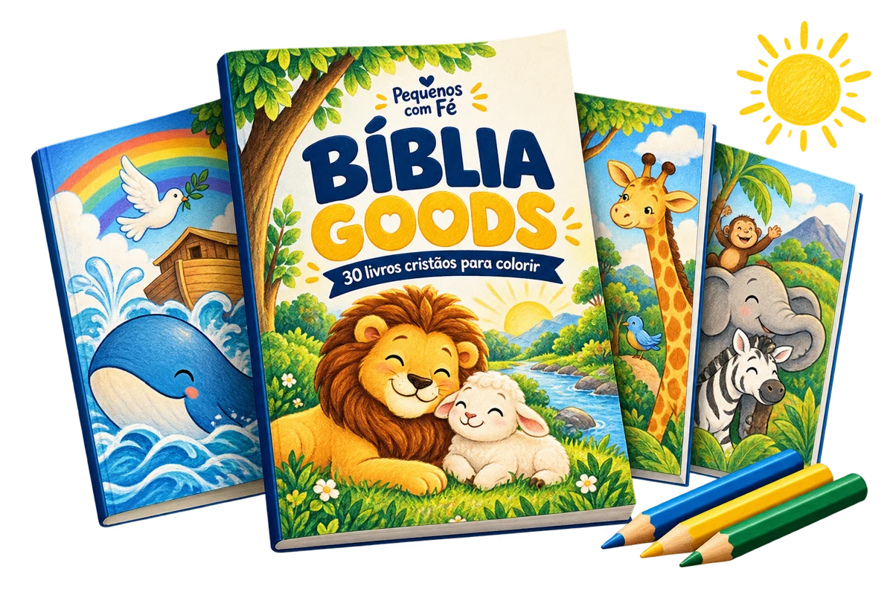

EM CASA
Fé em família
Compartilhe a fé enquanto colorem.
BÍBLIA GOODS · PEQUENOS COM FÉ
30 livros para imprimir e colorir por R$10. Mais opções para compartilhar a fé com os pequenos.

30 livros digitais · Pagamento único
R$10 pela coleção completa
Coleção digital para imprimir
BÍBLIA GOODS
Escolha um dos 30 livros, imprima as páginas e convide os pequenos para colorir.
MAIS UM JEITO DE COMPARTILHAR A FÉ
Conte a história, escolha um desenho e escute as perguntas dos pequenos.
Levar essa ideia para casaA FÉ TAMBÉM SE ENSINA NO DIA A DIA
Para famílias, professores e voluntários.
EM CASA
Compartilhe a fé enquanto colorem.
NA ESCOLA DOMINICAL
Opções para acompanhar o tema bíblico.
NA CÉLULA
Leve o tema bíblico para o papel.
DA COMPRA AOS LÁPIS DE COR
Finalize o pedido pelo checkout da Cakto.
Acesso por e-mail após o pagamento confirmado.
Escolha as páginas e separe os lápis.
A COLEÇÃO COMPLETA
Uma coleção. Muitas oportunidades para colorir e compartilhar a fé.
Produto digital. Impressão, papel e lápis não incluídos.
R$ 10
Uma compra. A coleção completa.
Quero os 30 livrosCompra única · Produto digital
Compra processada pela Cakto
TUDO CERTINHO ANTES DE COMEÇAR
Não. São livros para colorir; o adulto conduz a história e a conversa.
Confirme as condições de licença e reprodução antes de usar com turmas. A compra não autoriza compartilhar ou revender o PDF.
Não. Você recebe livros digitais para baixar e imprimir.
A coleção com 30 livros cristãos digitais para colorir. Impressão, papel e lápis não estão incluídos.
O acesso chega por e-mail após o pagamento confirmado. Confira spam e promoções.
Imprima em casa ou numa gráfica. Impressão não incluída.
Escolha os desenhos conforme a habilidade e o interesse da criança.
Consulte os dados de atendimento do vendedor no checkout e nas informações da sua compra na Cakto.
O PRÓXIMO MOMENTO JUNTOS
30 livros para os próximos momentos com os pequenos.
Quero os 30 livros30 livros por R$10 · Pagamento único